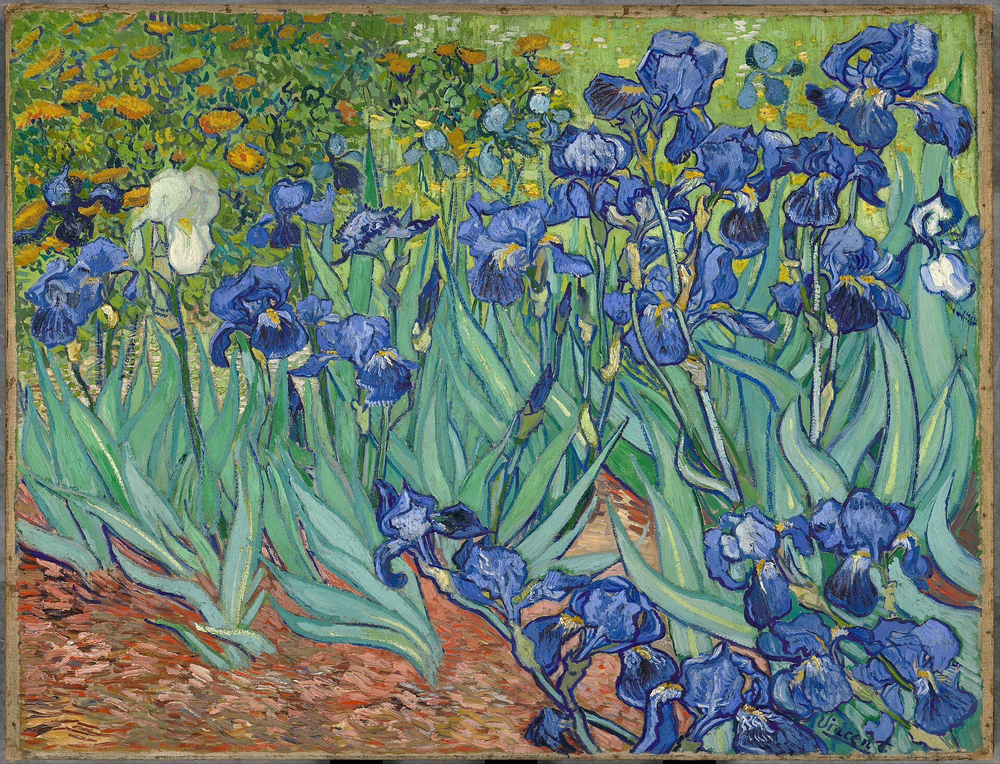
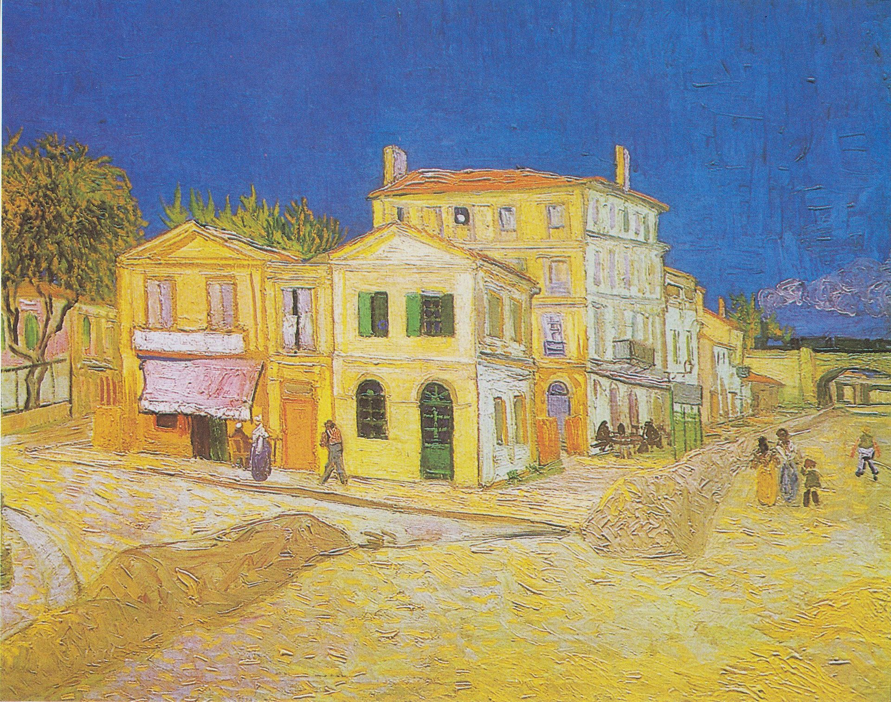
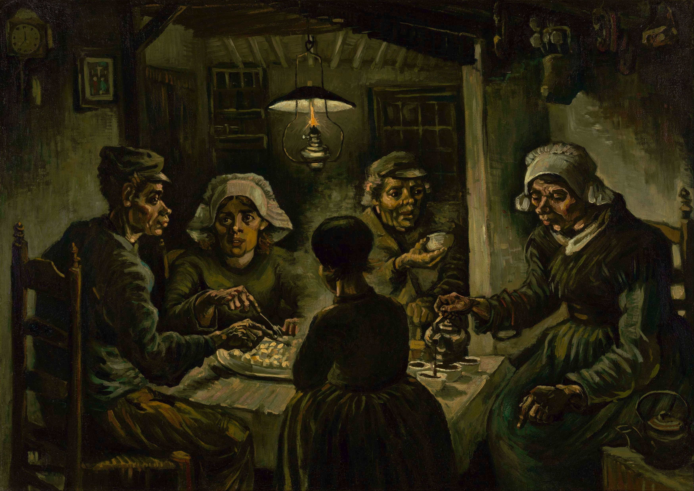

1890
Vincent van Gogh muore, la sua ultima lettera risale al 23 luglio.

Si dice che l'ultimo suo dipinto fosse "Campo di grano con volo di corvi" e che ritraesse il luogo in cui tentò il suicidio.

Vincent van Gogh muore, la sua ultima lettera risale al 23 luglio.
Si dice che l'ultimo suo dipinto fosse "Campo di grano con volo di corvi" e che ritraesse il luogo in cui tentò il suicidio.

A questo momento risale la presa di coscienza dell'artista di essere malato sia fisicamente che mentalmente, infatti dopo essere tornato per un periodo alla casa gialla, decide di farsi ricoverare a Saint-Rémy-de-Provence.

Nel tempo oltre centocinquanta psichiatri hanno tentato di classificare i suoi disturbi, con diagnosi tra cui schizofrenia, disturbo bipolare, sifilide e avvelenamento da indigestione di vernici, aggravate da insonnia, malnutrizione e consumo di alcolici.
A febbraio di quest'anno l'artista si trasferisce nella famosa casa gialla, dove dipingerà le sue opere più famose, tra cui anche la serie dei girasoli.

Van Gogh scrive in molte occasioni di soffrire di una profondissima solitudine, quindi pensa che la casa gialla possa diventare un luogo in cui vivere con altri artisti e lavorare insieme.

Paul Gauguin accetta l'invito e la convivenza dei due diventerà nota per "l'incidente dell'orecchio".

Nel 1887 Vincent è a Parigi, dove può finalmente convivere l'amato fratello Theo. Parigi gli offre numerosi stimoli creativi, dati anche i legami che stava riuscendo a stringere con altri artisti, e il rapporto sempre più stretto con Theo lo porta a dipingere quadri più gioiosi e colorati.
Dopo la morte improvvisa di suo padre, Vincent decide di spostarsi da Nuenen e visitare Amsterdam, raccogliendo più stimoli artistici che può. Si trasferisce poi ad Anversa dove scopre le stampe giapponesi alle quali si ispirerà, qui frequenta occasionalmente anche lezioni dell'Accademia di Belle Arti, ma la sua esuberanza non viene affatto apprezzata.
Vincent si trova a Nuenen dai propri genitori, anche se vive numerose delusioni. Dopo un fidanzamento fallito, le dicerie delle persone del paese lo rendevano sgradito a tutti, quindi Vincent girovagando si innamora di una prostituta trentenne che chiama Sien, ma anche questa storia non ha un lieto fine per il pittore.

L'artista continua a studiare per migliorare le sue opere, ispirandosi sempre di più alla vita dei campi, ai lavoratori e ai contadini.